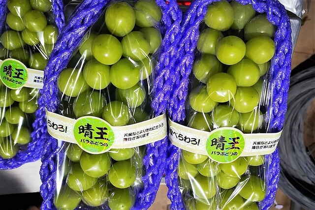

好きな物
シャインマスカット
好きな理由
薄い皮が破けると甘く酸っぱい味の果汁と実が溢れ出し、それらが舌の上で踊りそれによる素晴らしい体験が自身の感覚器官を刺激し、また咀嚼することでまた甘美な味で溢れまた感覚器官を刺激していく。その繰り返しが真に至福を感じさせるから。
関連して欲しい物
富
薄い皮が破けると甘く酸っぱい味の果汁と実が溢れ出し、それらが舌の上で踊りそれによる素晴らしい体験が自身の感覚器官を刺激し、また咀嚼することでまた甘美な味で溢れまた感覚器官を刺激していく。その繰り返しが真に至福を感じさせるから。
富